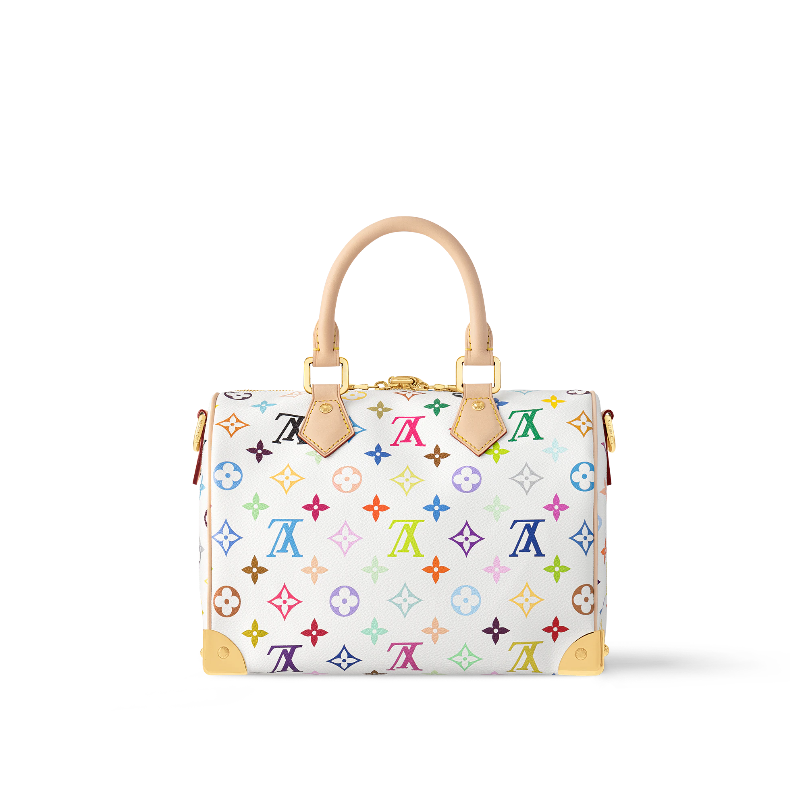

Este bolso es una reinterpretación del clásico Speedy 25, adornado con el patrón Monogram Multicolor característico de Murakami. El diseño presenta el monograma de Louis Vuitton en una paleta de 33 colores sobre un fondo blanco o negro, aportando un toque lúdico y contemporáneo. Fabricado en lona revestida de alta calidad, cuenta con detalles en piel natural, asas superiores y una correa ajustable para llevar al hombro o cruzado. El interior espacioso y el cierre de cremallera lo convierten en una opción práctica y estilosa para el uso diario.
 El bolso Capucines BB de esta colección destaca por su elegante estructura y la incorporación de las emblemáticas flores sonrientes de Murakami. Confeccionado en piel Taurillon, presenta un asa superior y una correa extraíble para mayor versatilidad. El interior está forrado en microfibra y cuenta con compartimentos organizativos. La solapa puede llevarse de dos maneras: mostrando el monograma LV o las flores de Murakami, permitiendo personalizar el estilo según la ocasión.
El bolso Capucines BB de esta colección destaca por su elegante estructura y la incorporación de las emblemáticas flores sonrientes de Murakami. Confeccionado en piel Taurillon, presenta un asa superior y una correa extraíble para mayor versatilidad. El interior está forrado en microfibra y cuenta con compartimentos organizativos. La solapa puede llevarse de dos maneras: mostrando el monograma LV o las flores de Murakami, permitiendo personalizar el estilo según la ocasión.
 Este pañuelo de seda de 90 x 90 cm exhibe el arte Superflat de Murakami, combinando el monograma de Louis Vuitton con motivos coloridos y personajes del artista. La técnica de impresión de alta calidad garantiza colores vibrantes y detalles nítidos. Es un accesorio versátil que puede usarse alrededor del cuello, como adorno para el bolso o incluso como banda para el cabello, añadiendo un toque artístico a cualquier conjunto.
Este pañuelo de seda de 90 x 90 cm exhibe el arte Superflat de Murakami, combinando el monograma de Louis Vuitton con motivos coloridos y personajes del artista. La técnica de impresión de alta calidad garantiza colores vibrantes y detalles nítidos. Es un accesorio versátil que puede usarse alrededor del cuello, como adorno para el bolso o incluso como banda para el cabello, añadiendo un toque artístico a cualquier conjunto.

Attrape-Rêves es una fragancia femenina de Louis Vuitton, lanzada en 2018. Creada por el maestro perfumista Jacques Cavallier Belletrud, esta esencia busca capturar la sensación de un sueño que se convierte en realidad.
En 2020, Louis Vuitton y el artista japonés Takashi Murakami presentaron una edición especial de Attrape-Rêves. Esta versión destaca por su frasco decorado con el estilo “Superflat” característico de Murakami, fusionando arte y perfumería de manera innovadora.
La fragancia ha sido elogiada por su capacidad para evocar sensaciones de asombro y sofisticación, consolidándose como una propuesta distintiva en el mundo de la perfumería de lujo.
Index